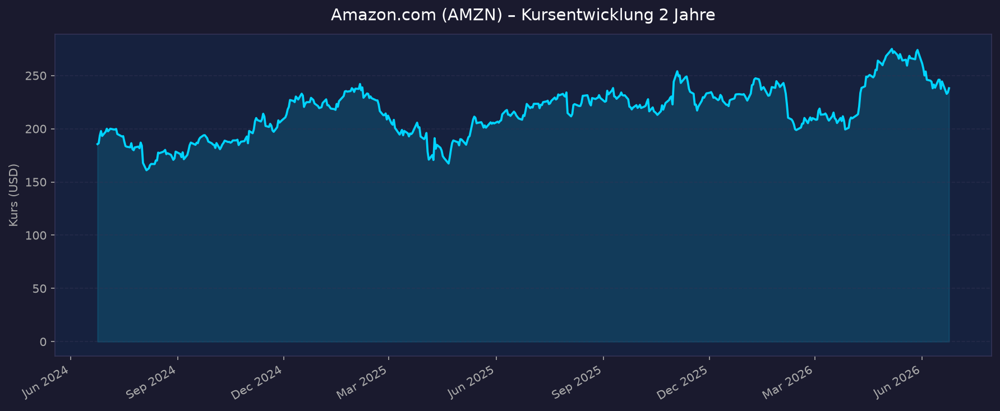
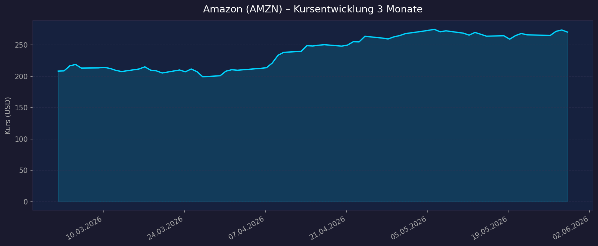

📈 1. Kursentwicklung
Aktueller Kurs: 270,64 USD | Veränderung heute: −1,23 %
Chart – 2 Jahre

Chart – 3 Monate

🔗 Interaktiver Chart auf TradingView
| Zeitraum | Kurs Start | Kurs Ende | Veränderung |
|---|---|---|---|
| 2 Jahre | 179,32 USD (30.05.2024) | 270,64 USD (29.05.2026) | +50,9 % |
| 3 Monate | 208,39 USD (02.03.2026) | 270,64 USD (29.05.2026) | +29,9 % |
| 52-Wochen-Hoch | — | 274,99 USD | — |
| 52-Wochen-Tief | — | 198,79 USD | — |
Marktkapitalisierung: ca. 2,91 Bio. USD
💹 2. KGV-Entwicklung (Kurs-Gewinn-Verhältnis)
Aktuelles KGV: ~32,3 (Stand: 28.05.2026)
| Zeitraum | KGV | Einordnung |
|---|---|---|
| Mai 2026 (aktuell) | ~32,3 | Historisch günstig |
| Ende 2025 | ~31,7 | Historisch günstig |
| 3-Jahres-Durchschnitt | ~56,1 | Deutlich über aktuellem Niveau |
| 5-Jahres-Durchschnitt | ~47,8 | Deutlich über aktuellem Niveau |
Bewertung: Das aktuelle KGV von ~32x liegt ca. 67 % unter dem historischen Durchschnitt (56x über 3 Jahre). Dies spiegelt Amazons deutlich verbesserte Profitabilität wider — das Unternehmen wächst schneller in Gewinne hinein als der Kurs gestiegen ist. Für einen Mega-Cap-Wachstumswert mit starker KI-Positionierung ist das eine relativ günstige Bewertung.
💰 3. Sales Multiple (Kurs-Umsatz-Verhältnis / P/S)
Aktuelles P/S-Verhältnis: ~3,15 (Ende 2025) / ca. 3,8–4,0x (Mai 2026 hochgerechnet)
| Zeitraum | P/S Ratio | Einordnung |
|---|---|---|
| Ende 2025 | 3,15 | Moderat |
| Ende 2024 | 3,81 | Peak |
| März 2022 | 2,65 | Historisch günstig |
| Spanne 2022–2025 | 2,10 – 3,81 | — |
Trend: Stabiles P/S-Verhältnis im Bereich 3–4x. Angesichts des Umsatzwachstums (17 % in Q1 2026) und des hohen Marginalgewinnanteils durch AWS ist das P/S für einen diversifizierten Tech-Konzern dieser Größe vertretbar.
📊 4. Handelsvolumen (Trading Volume)
| Zeitraum | Ø Tagesvolumen | Auffälligkeiten |
|---|---|---|
| 3-Monats-Durchschnitt | ~44,9 Mio. Aktien/Tag | Erhöhtes Volumen im März 2026 (Turnaround) |
| 2-Jahres-Durchschnitt | ~43,8 Mio. Aktien/Tag | Stabile Basis |
| Volumen-Peak (Mai 2026) | ~55 Mio. Aktien/Tag | Earnings-Reaktion / AI-Rally |
Volumentrend: Leicht steigendes Handelsvolumen gegenüber 2-Jahres-Schnitt. Hohe institutionelle Aktivität: Generation Investment Management fügte im Mai 2026 rund 2,82 Mio. Aktien hinzu. Kein Warnsignal durch ungewöhnlich niedrige Volumina.
🏦 5. Insider Trades (letzte 12 Monate)
| Datum | Name | Funktion | Kauf/Verkauf | Anzahl Aktien | Wert (USD) |
|---|---|---|---|---|---|
| 21.05.2026 | David Zapolsky | Senior Vice President | Verkauf | 15.450 | ~4.117.252 |
| Feb.–Mär. 2026 | Verschiedene Insider | — | Verkauf (25 Transakt.) | — | ~11.838.544 |
| 10.09.2025 | Patricia Q. Stonesifer | Director | RSU-Zuteilung | 4.695 RSU | — |
3-Monats-Überblick: Netto-Verkäufe — typisches Bild für routinemäßige Insiderverkäufe (Diversifikation), kein Ausnahme-Signal.
2-Jahres-Überblick: Überwiegend Verkäufe, was bei einem $2,9-Billionen-Konzern mit hohen Aktienkomponenten im Vergütungspaket der Standard ist. Keine Paniksignale, keine großen Insiderkäufe — aber auch kein Bullensignal.
Quellen: SEC EDGAR / MarketBeat / MarketScreener
🩳 6. Short-Positionen
Aktuelle Short Quote: 0,81 % des Streubesitzes (Float) — Stand April 2026
| Zeitraum | Short Interest | Einordnung |
|---|---|---|
| April 2026 (aktuell) | 0,81 % / ~78 Mio. Aktien | Sehr niedrig |
| Historisch | typisch 0,5–1,5 % | Normalbereich |
Einschätzung: Die Short-Quote ist sehr niedrig — der Markt setzt kaum auf fallende Kurse bei Amazon. Bei einem $2,9T-Konzern mit strukturellen Wettbewerbsvorteilen ein typisches Bild. Kein Short-Squeeze-Potenzial, aber auch kein negatives Signal.
🗞️ 7. Aktuelle Nachrichten (Mai 2026)
| Datum | Quelle | Nachricht | Relevanz |
|---|---|---|---|
| 14.05.2026 | Bloomberg | Amazon's AI-Push treibt Kurs in Richtung $3-Billionen-Meilenstein | 🔴 Hoch |
| 29.04.2026 | CNBC / Variety | Q1 2026: $181,5 Mrd. Umsatz (+17 % YoY), EPS $2,78 — massiver Beat | 🔴 Hoch |
| 29.04.2026 | CNBC | AWS Q1 2026: $37,6 Mrd. (+28 % YoY) — höchstes Wachstum seit 15 Quartalen | 🔴 Hoch |
| Mai 2026 | Capital.com | Analystenziele: $250–$370, Konsens $305–$312 | 🟡 Mittel |
| Mai 2026 | TechCrunch | Exklusiv-Tour Trainium-Lab: OpenAI, Anthropic, Apple setzen auf Amazons KI-Chips | 🔴 Hoch |
| Mai 2026 | retail-news.de | $50 Mrd. Investment in OpenAI angekündigt | 🔴 Hoch |
| Mai 2026 | QuiverQuant | Generation Investment Management: 2,82 Mio. AMZN-Aktien neu gekauft | 🟡 Mittel |
| Mai 2026 | AboutAmazon | Dr. Roy Schoenberg wird neuer Leiter Amazon Health Services (ab 1. Juli) | 🟢 Gering |
| Mai 2026 | Retail-News | Amazon Supply Chain Services als neues Angebot gestartet | 🟡 Mittel |
| Mai 2026 | Business Insider | KI-Kapazitätskrise bei AWS: Amazon verlor zeitweise Kunden an Konkurrenz | 🔴 Hoch |
Sentiment: Überwiegend positiv — dominiert durch starke Earnings, AWS-Reacceleration und KI-Infrastruktur-Aufbau. Einziger Wermutstropfen: Q2 2025 Guidance hatte enttäuscht (Kursrückgang −7 %) und eine zeitweise Kapazitätskrise bei AWS. Beide Probleme scheinen sich bis Q1 2026 aufgelöst zu haben.
📋 8. Letzte 3 Quartalsberichte + Q1 2026 (aktuellste Periode)
Q1 2026 (Berichtet: 29.04.2026) ← Aktuellstes Quartal
| Kennzahl | Ist | Erwartung | Abweichung |
|---|---|---|---|
| Umsatz (Revenue) | 181,5 Mrd. USD | 177,13 Mrd. USD | +2,5 % |
| EPS (bereinigt) | 2,78 USD | 1,63 USD | +70,6 % ⚠️ |
| AWS Revenue | 37,6 Mrd. USD | — | +28 % YoY |
| Werbung (Ads) | 17,2 Mrd. USD | — | +24 % YoY |
| Operating Income | 23,9 Mrd. USD | — | Rekord (13,1 % Marge) |
⚠️ EPS-Beat durch $16,8 Mrd. Anthropic-Investitionsbewertungsgewinn (pre-tax) verzerrt. Bereinigt um diesen Sondereffekt ca. $1,54 EPS.
Guidance Q2 2026: Umsatz $194–199 Mrd. (über Konsens) Kursreaktion: Positiv — Kurs in Richtung $3-Billionen-Grenze (Allzeithoch ~$274,99)
Q3 2025 (Berichtet: 30.10.2025)
| Kennzahl | Ist | Erwartung | Abweichung |
|---|---|---|---|
| Umsatz (Revenue) | 180,17 Mrd. USD | 177,76 Mrd. USD | +1,4 % |
| EPS (bereinigt) | 1,95 USD | 1,56 USD | +25,2 % |
| AWS Revenue | 33,0 Mrd. USD | — | +20 % YoY (Reacceleration) |
| Werbung (Ads) | 17,7 Mrd. USD | — | +24 % YoY |
| Nettogewinn | 21,2 Mrd. USD | — | +38 % YoY |
Besonderheiten: 2 Sonderbelastungen: $2,5 Mrd. FTC-Vergleich + $1,8 Mrd. Abfindungskosten. Capex-Prognose 2025 auf $125 Mrd. erhöht.
Kursreaktion: Positiver Schub — Aktie stieg auf Rekordhoch nach AWS-Reacceleration auf 20 % Wachstum.
Q2 2025 (Berichtet: 31.07.2025)
| Kennzahl | Ist | Erwartung | Abweichung |
|---|---|---|---|
| Umsatz (Revenue) | 167,7 Mrd. USD | 162,05 Mrd. USD | +3,5 % |
| EPS (bereinigt) | 1,68 USD | 1,33 USD | +26,3 % |
| AWS Revenue | 30,9 Mrd. USD | — | +17,5 % YoY |
| Werbung (Ads) | 15,69 Mrd. USD | — | +23 % YoY |
| Operating Income | 19,2 Mrd. USD | — | +31 % YoY |
Guidance Q3 2025: Operating Income-Guidance enttäuschte. Kursreaktion: −7 % nachbörslich — trotz Beat enttäuschte der Q3-Ausblick.
Q1 2025 (Berichtet: 01.05.2025)
| Kennzahl | Ist | Erwartung | Abweichung |
|---|---|---|---|
| Umsatz (Revenue) | 155,7 Mrd. USD | 154,64 Mrd. USD | +0,7 % |
| EPS (bereinigt) | 1,59 USD | 1,35 USD | +17,8 % |
| AWS Revenue | 29,3 Mrd. USD | — | +17 % YoY |
| Werbung (Ads) | 13,9 Mrd. USD | — | +18 % YoY |
| Nord-Amerika | 92,9 Mrd. USD | — | +8 % YoY |
| International | 33,5 Mrd. USD | — | +5 % YoY |
Guidance Q2 2025: Umsatz $159–164 Mrd. Kursreaktion: Positiv — solides Ergebnis mit EPS-Beat.
🌍 9. Marktkontext & Wettbewerb
Executive Summary
Amazon ist in drei strukturell wachsenden Märkten marktführend: Cloud Computing (AWS), US-E-Commerce und digitale Werbung. Die KI-Welle wirkt als starker Rückenwind für alle drei Segmente. Das Unternehmen investiert massiv ($200 Mrd. Capex 2026) in die Infrastruktur der nächsten Generation.
Cloud Computing (AWS)
Marktgröße 2025: ~$395 Mrd. globaler Cloud-Infrastrukturmarkt
Wachstumsrate: Schnellster Ausbau in absoluten Dollars aller Zeiten, getrieben durch KI-Nachfrage
| Anbieter | Marktanteil 2025 | Jahresumsatz | Wachstum (YoY) |
|---|---|---|---|
| AWS (Amazon) | ~33 % | ~$130 Mrd. | ~20 % |
| Microsoft Azure | ~22–23 % | ~$91 Mrd. | ~40 % |
| Google Cloud | ~12–13 % | ~$47 Mrd. | Stärkstes Momentum |
Einschätzung AWS: AWS führt klar in Marktanteil, verliert aber leicht gegenüber Azure (22→23%) und Google Cloud (→13%). Die Differenzierung durch eigene Chips (Trainium, Graviton) ist ein strategischer Vorteil: 90 % der größten AWS-Kunden nutzen Trainium. OpenAI, Anthropic und Apple setzen auf Amazons Trainium-Chips. Kapazitätsproblem: Trainium3 bis Mitte 2026 nahezu ausgebucht — Nachfrage übersteigt Angebot.
E-Commerce
US-Marktanteil: ~40,5 % aller US-Online-Händler (55,7 % des gesamten US-E-Commerce-Spends in Q3 2025)
| Wettbewerber | US-E-Commerce-Anteil | Stärke | Schwäche |
|---|---|---|---|
| Amazon | 40,5 % | Breadth, Prime, Fulfillment | Lebensmittel (nur 14 % Anteil) |
| Walmart | 9,2 % | Lebensmittel, Stationär (7.000 Standorte) | Kleinere Sortimentstiefe |
| Apple | 3,2 % | Premium-Ökosystem | Nur eigene Produkte |
| Alibaba (International) | — | China-Dominanz | Kein US-Zugang |
Trend: Walmart wächst stark digital (+19,9 % Online-Anteil am Gesamtumsatz in Q3 2025), bleibt aber weit abgeschlagen. Amazon ist strukturell schwächer im Lebensmittelbereich.
Digitale Werbung
Amazon Ads wuchs in Q1 2026 um +24 % YoY auf $17,2 Mrd. — das ist die am schnellsten wachsende Sparte nach AWS und übertrifft das Wachstumstempo von Meta und Alphabet in diesem Segment. Amazon hat einen strukturellen Vorteil: Werbung direkt auf der Kaufplattform (höchste Conversion-Rate im Markt).
KI-Infrastruktur & Ökosystem
- Trainium-Chips: Nächste Gen (Trainium4) für 2027 geplant mit 6x höherer Leistung
- Amazon Bedrock: Zugang zu 20+ KI-Modellen (Anthropic, Google, Mistral, OpenAI)
- Investitionen 2026: $200 Mrd. Capex, Fokus KI-Infrastruktur und Rechenzentren
- Anthropic-Partnerschaft: $100 Mrd. AWS-Commitment, tiefe Integration
- OpenAI-Investment: $50 Mrd. Investition angekündigt (Mai 2026)
Risiken aus dem Marktumfeld
- Regulierung: FTC-Verfahren ($2,5 Mrd. Vergleich in Q3 2025) — weitere Kartellverfahren möglich
- Azure-Aufholjagd: Microsoft wächst im Cloud-Segment schneller als AWS (40 % vs. 28 %)
- Kapazitätskrise AWS: Zeitweise Kundenverlust an Konkurrenz durch Kapazitätsmangel
- Tarifdruck: Amazon als größter US-Importeur stark von US-Handelspolitik betroffen
- Margenrisiko Retail: E-Commerce-Segment strukturell niedrigmargig — Profitabilität hängt an AWS
📝 Gesamteinschätzung
Stärken:
- Marktführer in Cloud (33 %), US-E-Commerce (40,5 %) und schnell wachsend in Werbung
- AWS-Reacceleration: +28 % Wachstum in Q1 2026 (15-Quartalshoch), 37,7 % operative Marge
- KI-Infrastruktur-Positionierung mit eigenem Chip-Stack (Trainium) — strategisch nicht einfach nachzuahmen
- Historisch günstiges KGV (~32x) bei deutlich gesteigerter Profitabilität
- Rekord-operative Marge (13,1 %) in Q1 2026 — strukturelle Margensteigerung erkennbar
- $200 Mrd. Capex-Plan signalisiert Managementvertrauen in langfristige Wachstumstrends
Risiken:
- EPS-Beat in Q1 2026 durch $16,8 Mrd. Anthropic-Buchgewinn verzerrt — bereinigt deutlich schwächer
- Azure wächst schneller als AWS (40 % vs. 28 %) — langfristiger Marktanteilsverlust möglich
- Kapazitätsengpässe bei AWS: temporärer Kundenverlust an Google/Azure
- Hohe Capex-Last ($200 Mrd. p.a.) bei steigendem Free-Cashflow-Druck
- Insider verkaufen netto — kein Bullensignal von innen
- Regulatorisches Risiko in E-Commerce (EU, USA)
Fazit: Amazon befindet sich 2026 in einer starken operativen Phase: alle drei Kernbereiche (Cloud, E-Commerce, Werbung) wachsen profitabel, die KI-Positionierung ist glaubwürdig und die Bewertung ist historisch günstig. Die größten Risiken liegen im Azure-Aufholjagd bei Cloud sowie im hohen Capex-Bedarf. Für langfristig orientierte Investoren ist die aktuelle Bewertung (~32x KGV, ~3,8x P/S) bei diesem Wachstumsprofil attraktiv — aber kein offensichtliches Schnäppchen.
Datenquellen: Yahoo Finance · Macrotrends · Finanzen.net · Reuters · MarketWatch · Bloomberg · SEC Edgar · OpenInsider · MarketBeat · Finviz · Stooq · CNBC · Futurum Research · TechCrunch
Keine Anlageberatung — rein informative Auswertung öffentlicher Daten